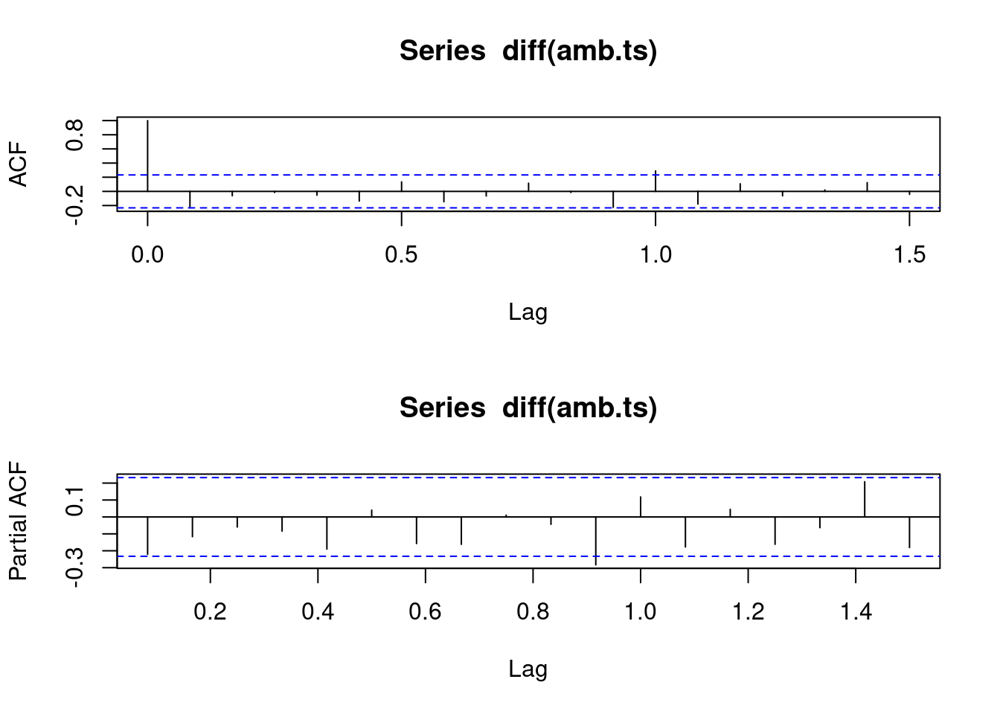

Procedimentos Ambulatoriais
Procedimentos (ou atendimentos) ambulatoriais são aqueles voltados para a realização de curativos, pequenas cirurgias, pestação de primeiros socorros e demais meios de prestação de serviços a saúde que dispensam estruturas e recursos de maior complexidade para sua execução.
Exemplos de especialidades encontradas no ambulatório médico:
Clínica geral
Pediatria
Ortopedia
Ginecologia
Exemplos de atendimentos encontrados no ambulatório médico:
Curativos ou suturas
Retirada de pontos
Punção ou infiltração
Também é possível realizar exames clínicos e de imagem, como:
Radiografias
Tomografias
Ultrassonografias
Exames laboratoriais
Procedimentos Hospitalares
São aqueles que necessitem de ambiente hospitalar para sua realização, precisando então de equipamentos e serviços de maior complexidade, para efetuar cirurgias mais invasivas ou para internação de um paciente.
As especialidades encontradas no ambiente hospitalar pode ser das mais variadas, pois é necessário que se tenham médicos especialistas disponíveis para determinadas operações, desde cirurgias ortopédicas até as mais invasivas como transplante de órgãos.
Explicado o que são os atendimentos ambulatoriais e hospitalares, vamos a leitura dos dados. A série utilizada pode ser encontrada em http://ftp.dadosabertos.ans.gov.br/FTP/PDA/TISS/AMBULATORIAL/ para a série ambulatorial e em http://ftp.dadosabertos.ans.gov.br/FTP/PDA/TISS/HOSPITALAR/ para a série hospitalar, no entanto será utilizado os dados já tratados e agregados mensalmente, para fins de facilitar o trabalho.
# Importando os dados do GitHub, coluna "comp" refere-se a competência e "valor" ao valor total observado na competência.
# Ambulatorial
amb = read.csv("https://raw.githubusercontent.com/nadsu077/TimeSeriesData/main/ambulatorial_CE.csv", header = T)
# Hospitalar
hosp = read.csv("https://raw.githubusercontent.com/nadsu077/TimeSeriesData/main/hospitalar_CE.csv", header = T)
# Série temporal ambulatorial
amb.ts = ts(amb[,'valor'], # Especificando os dados que serão convertidos em série temporal
start = c(2015, 1), # Competência inicial, 2015-01
end = c(2020,12), # Competência final, 2020-12
frequency = 12) # Frequência da série (1 - Anual, 2 - Semestral, 4 - Trimestral, 12 - Mensal)
# Série temporal hospitalar
hosp.ts = ts(hosp[,'valor'], # Especificando os dados que serão convertidos em série temporal
start = c(2015, 1), # Competência inicial, 2015-01
end = c(2020,12), # Competência final, 2020-12
frequency = 12) # Frequência da série (1 - Anual, 2 - Semestral, 4 - Trimestral, 12 - Mensal)Após importar os dados e tranformá-lo em um objeto do tipo time series, é interessante gerar gráficos iniciais para visualização dos dados e buscar primeiras interpretações da série.
Gráfico das séries ao mês
# Série ambulatorial mensal
ts.plot(amb.ts, main = "Série Ambulatorial")# Série hospitalar mensal
ts.plot(hosp.ts, main = "Série Hospitalar")Inicialmente pode-se ter a interpretação que os valores das despesas crescem conforme o tempo, ou seja, apresentam tendência positiva. Por volta do mês de abril de 2020 pode ser observado o efeito da pandemia e da suspensão do atendimento presencial obrigatório emitido pela ANS.
Gráfico das séries agregadas anualmente
# Série ambulatorial anual
plot(aggregate(amb.ts))
# Série hospitalar anual
plot(aggregate(hosp.ts))Agregando os valores anualmente fica mais evidente a tendência positiva da série, ocasionando no aumento nas despesas ambulatoriais conforme os anos passam. A série ambulatorial apresenta tendência linear positiva, enquanto a série hospitalar apresenta tendência positiva, porém com concavidade no ano de 2017. O ano de 2020 apresenta queda por ter sido o ano afetado pela pandemia da COVID-19
Boxplot dos valores mensalmente
# Box-plot dos meses da série ambulatorial
boxplot(amb.ts ~ cycle(amb.ts))# Box-plot dos meses da série hospitalar
boxplot(hosp.ts ~ cycle(hosp.ts))A análise visual do boxplot dos valores pelos meses de janeiro (1) a dezembro (12) mostram que não há sazonalidade definida nas séries observadas, para confirmar se há presença de sazonalidade será feito teste de verificação mais afrente.
Decomposição das séries
# Decomposição da série ambulatorial
plot(decompose(amb.ts, type = "additive"))# Decomposição da série hospitalar
plot(decompose(hosp.ts, type = "additive"))A decomposição da série pode ser efeita utilizando dois modelos, o modelo aditivo ou o modelo multiplicativo.
O modelo aditivo é dado por: \(Y[t] = T[t] + S[t] + e[t]\)
Já o modelo multiplicativo é dado por: \(Y[t] = T[t] * S[t] * e[t]\)
Onde:
T[t] = Tendência
S[t] = Sazonalidade
e[t] = Termo aleatório ou ruído branco
Para saber qual modelo utilizar é simples, basta olhar para a própria série. Se, conforme o tempo passa, a variabilidade aumenta, ou seja, os valores extremos se distanciam cada vez mais, a série segue o modelo multiplicativo. No caso analisado da despesa ambulatorial e hospitalar a variabilidade dos dados não aumenta com o tempo, sendo então cabível utilizar o modelo aditivo para ambas as séries.
Na decomposição é gerado 4 gráficos, contendo a série observada (observed), a tendência (trend), a sazonalidade (seasonal) e o termo aleatório ou ruído branco (random). Conforme já foi dito acima a série apresenta tendência positiva, podendo ser interpretada como tendência linear positiva para a série ambulatorial, pois chega a se assemelhar com uma reta, já a série hospitalar apresenta de fato tendência positiva com certa concavidade, porém no ano de 2020 é percebido que a tendência decai para ambas as séries, efeito gerado pela pandemia da COVID-19.
Retirando o termo aleatório
O intuito é ter a visualização da tendência em conjunto com a tendência somada com a sazonalidade, retirado o termo aleatório (ruído branco).
Série Ambulatorial
# Série Ambulatorial
decom.a = decompose(amb.ts)
trend.a = decom.a$trend
season.a = decom.a$seasonal
ts.plot(cbind(trend.a, trend.a+season.a), lty = 1:2)
A série ambulatorial de fato apresenta nitidez na linearidade da tendência positiva, apresentando queda no ano de 2020.
Série Hospitalar
# Série Hospitalar
decom.h = decompose(hosp.ts)
trend.h = decom.h$trend
season.h = decom.h$seasonal
ts.plot(cbind(trend.h, trend.h+season.h), lty = 1:2)A série hospitalar, como já comentado, apresenta certa concavidade, onde pode ser observada entre os anos de 2017 a 2019.
Analisando a componente sazonal das séries
Utilizando o método dummies
O método foi encontrado no seguinte material: https://analisemacro.com.br/wp-content/uploads/2015/02/CursoCompleto.pdf
O método dummies tempo como hipótese nula e alternativa, respectivamente:
\(H_0: \text{Não existe sazonalidade } (\beta_2 = \beta_3 = \beta_4 = ... = \beta_i = 0)\)
\(H_1: \text{Há indícios de sazonalidade } (\beta_2 \neq \beta_3 \neq \beta_4 \neq ... \neq \beta_i \neq 0)\)
Série Ambulatorial
Q = ordered(cycle(amb.ts)) # Ordenando os meses da série
amb.reg = lm(amb.ts ~ Q) # Regressão linear da série pelos meses da série
summary(amb.reg) # Resumo estatístico do resultado da regressão##
## Call:
## lm(formula = amb.ts ~ Q)
##
## Residuals:
## Min 1Q Median 3Q Max
## -61771591 -30079200 3985645 26801866 64579820
##
## Coefficients:
## Estimate Std. Error t value Pr(>|t|)
## (Intercept) 151250215 4509635 33.539 <2e-16 ***
## Q.L 14329711 15621834 0.917 0.363
## Q.Q -4025088 15621834 -0.258 0.798
## Q.C -24033046 15621834 -1.538 0.129
## Q^4 -5752315 15621834 -0.368 0.714
## Q^5 -2461506 15621834 -0.158 0.875
## Q^6 2923438 15621834 0.187 0.852
## Q^7 -8562874 15621834 -0.548 0.586
## Q^8 2369392 15621834 0.152 0.880
## Q^9 3688281 15621834 0.236 0.814
## Q^10 8030419 15621834 0.514 0.609
## Q^11 -4438724 15621834 -0.284 0.777
## ---
## Signif. codes: 0 '***' 0.001 '**' 0.01 '*' 0.05 '.' 0.1 ' ' 1
##
## Residual standard error: 38270000 on 60 degrees of freedom
## Multiple R-squared: 0.06534, Adjusted R-squared: -0.106
## F-statistic: 0.3813 on 11 and 60 DF, p-value: 0.9585Série Hospitalar
Q = ordered(cycle(hosp.ts)) # Ordenando os meses da série
hosp.reg = lm(hosp.ts ~ Q) # Regressão linear da série pelos meses da série
summary(hosp.reg) # Resumo estatístico do resultado da regressão##
## Call:
## lm(formula = hosp.ts ~ Q)
##
## Residuals:
## Min 1Q Median 3Q Max
## -27986066 -16506890 4571563 10071676 32359640
##
## Coefficients:
## Estimate Std. Error t value Pr(>|t|)
## (Intercept) 84596960 2021399 41.851 <2e-16 ***
## Q.L 157088 7002330 0.022 0.982
## Q.Q -7919754 7002330 -1.131 0.263
## Q.C 114214 7002330 0.016 0.987
## Q^4 -92001 7002330 -0.013 0.990
## Q^5 -6507496 7002330 -0.929 0.356
## Q^6 1828863 7002330 0.261 0.795
## Q^7 -3124285 7002330 -0.446 0.657
## Q^8 4321599 7002330 0.617 0.539
## Q^9 588428 7002330 0.084 0.933
## Q^10 6041462 7002330 0.863 0.392
## Q^11 -4146455 7002330 -0.592 0.556
## ---
## Signif. codes: 0 '***' 0.001 '**' 0.01 '*' 0.05 '.' 0.1 ' ' 1
##
## Residual standard error: 17150000 on 60 degrees of freedom
## Multiple R-squared: 0.06095, Adjusted R-squared: -0.1112
## F-statistic: 0.354 on 11 and 60 DF, p-value: 0.9684Os coeficientes da regressão foram não significativos (p > 0.05), enquanto o intercepto foi significativo (p < 0.05), para ambas as séries. Pelo método dummies não rejeita-se H0: Não existe sazonalidade (ß2 = ß3 = ß4 = … = ßi = 0), pois o p-valor foi de 0.9585 (série ambulatorial) e de 0.9684 (série hospitalar), já o valor da estatística F igual a 0.3813 (série ambulatorial) e 0.354 (série hospitalar), apresentando não rejeição para a hipótese nula do modelo gerado. No entanto, para que tenha-se maior confirmação da não presença da sazonalidade pode ser utilizado métodos de análise visual (gráfica) como boxplot dos meses (gerado e analisado mais acima), subséries sazonais e run sequence.
Série Ambulatorial
# Subséries sazonais ambulatorial
monthplot(amb.ts)# Run Sequence ambulatorial
qicharts::qic(amb.ts) # Pacote: https://cran.r-project.org/web/packages/qicharts/vignettes/runcharts.htmlOs gráficos de subséries sazonais e run sequences para a série ambulatorial não retornam sazonalidade bem definida, reforçando o resultado obtido pelo métodos dummies para a série analisada.
Série Hospitalar
# Subséries sazonais hospitalar
monthplot(hosp.ts)# Run Sequence hospitalar
qicharts::qic(hosp.ts) # Pacote: https://cran.r-project.org/web/packages/qicharts/vignettes/runcharts.htmlPara a série hospitalar também foi obtido o resultado de sazonalidade não definida, com o resultado gráfico confirmando a regressão dummies feita anteriormente.
Testes de quebra estrutural
Entende-se por quebra estrutural de uma série temporal o momento dentro das sequências de registros que mudam a dinâmica da série ou uma, ou mais, observações que estejam fora do que foi observado antes.
- Tipos de Testes de quebra estrutural:
SUP-Wald, OLS-CUSUM, OLS-MOSUM, Bai-Perron
Será utilizado mais de um tipo de teste para que seja validado a presença de quebra estrutural nas séries. O resultado esperado é que seja apontado quebra existente em meados do mês de Abril de 2020.
Série Ambulatorial
time = c(1:length(amb.ts))
amb_BP = strucchange::breakpoints(amb.ts ~ time, h = 0.1, breaks = 5)
plot(amb_BP)Utilizando a função breakpoints do pacote strucchange para o teste pelo método Bai-Perron para observação das possíveis quebras na série. Observando o gráfico da identificação de quantas quebras existem na série pelas méticas BIC e a Soma dos quadrados dos resíduos (RSS). Pelo BIC, métrica aconselhável pela documentação do teste, foi obtido a quantidade de duas quebras estruturais.
# Resultado
amb_BP##
## Optimal 3-segment partition:
##
## Call:
## breakpoints.formula(formula = amb.ts ~ time, h = 0.1, breaks = 5)
##
## Breakpoints at observation number:
## 54 63
##
## Corresponding to breakdates:
## 2019(6) 2020(3)O resultado de quais foram as duas quebras identificadas na série pode ser obtida chamando o objeto amb_BP onde as quebras foram nos meses de Junho de 2019 e Março de 2020.
# OLS-CUSUM
amb_cusum = strucchange::efp(amb.ts ~ time, type = "OLS-CUSUM", h = 0.1)
# OLS-MOSUM
amb_mosum = strucchange::efp(amb.ts ~ time, type = "OLS-MOSUM", h = 0.1)
# Plot OLS-CUSUM
plot(amb_cusum)# Plot OLS-MOSUM
plot(amb_mosum)Pelo teste de OLS-CUSUM foi observado meses entre o fim de 2019 e meados do início de 2020 fora do intervalo de confiança. Já pelo método OLS-MOSUM os meses fora do intervalo de confiança foram por volta do meio de 2019, porém essa observação pode ser desconsiderada por apresentar distância ínfima entre o intervalo, já a outra observação de quebra foi obtida por volta do início de 2020, com seu menor valor por volta de Abril do ano.
Dessa forma, será considerada apenas a quebra estrutural no ano de 2020, já que foi a percebida e confirmada dentro dos três testes realizados.
Série Hospitalar
time = c(1:length(hosp.ts))
hosp_BP = strucchange::breakpoints(hosp.ts ~ time, h = 0.1, breaks = 5)
plot(hosp_BP)Utilizando a função breakpoints do pacote strucchange para o teste pelo método Bai-Perron para observação das possíveis quebras na série. Observando o gráfico da identificação de quantas quebras existem na série pelas méticas BIC e a Soma dos quadrados dos resíduos (RSS). Pelo BIC, métrica aconselhável pela documentação do teste, foi obtido a quantidade de três quebras estruturais.
# Resultado
hosp_BP##
## Optimal 4-segment partition:
##
## Call:
## breakpoints.formula(formula = hosp.ts ~ time, h = 0.1, breaks = 5)
##
## Breakpoints at observation number:
## 24 51 64
##
## Corresponding to breakdates:
## 2016(12) 2019(3) 2020(4)O resultado de quais foram as três quebras identificadas na série pode ser obtida chamando o objeto amb_BP, onde as quebras foram nos meses de Dezembro de 2016 e Março de 2019 e Abril de 2020.
# OLS-CUSUM
hosp_cusum = strucchange::efp(hosp.ts ~ time, type = "OLS-CUSUM", h = 0.1)
# OLS-MOSUM
hosp_mosum = strucchange::efp(hosp.ts ~ time, type = "OLS-MOSUM", h = 0.1)
# Plot OLS-CUSUM
plot(hosp_cusum)# Plot OLS-MOSUM
plot(hosp_mosum)
Pelo método OLS-CUSUM foi obtido resultado fora do intervalo de confiança no final do ano de 2016, porém a distância é pequena e pode ser desconsiderada, já a sergunda observação foi entre o final 2019 e início de 2020. Para o teste OLS-MOSUM foi obtido uma observação de quebra no meio do ano de 2019. Para fins de assimilimar com o observado na série ambulatórial será considerada quebra no ano de 2020, em meados de Abril do ano.
O que será feito agora?
Dessa forma, será feito a seguinte linha no trabalho:
- Criar novas séries desconsiderando o ano de 2020;
- Dar continuidade as análises utilizando duas séries para os dados (ambulatorial e hospitalar);
- Realizar extrapolação das séries sem 2020 e avaliar com as séries com 2020.
Série Ambulatorial sem 2020
amb1.ts = ts(amb[1:60,2], start = c(2015,1), end = c(2019,12), frequency = 12)
plot(amb1.ts)Pela nova série criada não é perceptível alguma quebra na estrutura, como observado em 2020.
# Série anual
plot(aggregate(amb1.ts))# Box-plot da sazonalidade da série
boxplot(amb1.ts ~ cycle(amb1.ts))# Decomposição da série
plot(decompose(amb1.ts))Pelo agregado anual a série continua mantendo tendência linearmente positiva, pelos box-plots dos meses não é perceptível sazonalidade definida na série. O gráfico da decomposição da série mostra a tendência já relatada e a parte sazonal da série, mantendo-se a mesma leitura de que não há definição de sazonalidade na série.
decom = decompose(amb1.ts)
trend = decom$trend
season = decom$seasonal
ts.plot(cbind(trend, trend+season), lty = 1:2)Analisando o gráfico da tendência em conjunto com a tendência + sazonalidade é percebido como a série (despesas) cresce conforme o tempo.
Série Hospitalar sem 2020
hosp1.ts = ts(hosp[1:60,2], start = c(2015,1), end = c(2019,12), frequency = 12)
plot(hosp1.ts)Observando a série hospitalar sem o ano de 2020 pode-se identificar duas possíveis quebras no início de 2017 e em meados do meio de 2019.
# Série anual
plot(aggregate(hosp1.ts))# Box-plot da sazonalidade da série
boxplot(hosp1.ts ~ cycle(hosp1.ts))# Decomposição da série
plot(decompose(hosp1.ts))O agregado anual da série mostra crescimento côncavo com sua concavidade no ano de 2017. O box-plot dos meses não mostra presença bem definida do efeito sazonal na série. O gráfico da série decomposta mostra o termo da tendência apresentando concavidade entre 2017 e 2019, como visto no agregado anual. O termo sazonal não tem efeito bem definido na série.
decom = decompose(hosp1.ts)
trend = decom$trend
season = decom$seasonal
ts.plot(cbind(trend, trend+season), lty = 1:2)O efeito da tendência em conjunto com a tendência + sazonalidade da série mostra o efeito do crescimento côncavo das despesas hospitalares entre 2017 a 2019.
Efeito sazonal das novas séries
Será assumido que as séries permanecem com a mesma interpretação quanto ao efeito sazonal nas séries, pois foi retirado 1 ano (12 períodos) das séries completas.
Testes de estacionariedade
Será utilizado dois testes para verificação da estacionariedade das séries (com e sem 2020), o KPSS e o ADF.
Links contendo as informações dos testes feitos:
https://www.statsmodels.org/devel/examples/notebooks/generated/stationarity_detrending_adf_kpss.html
https://www.machinelearningplus.com/time-series/kpss-test-for-stationarity/
https://www.statology.org/kpss-test-in-r/
- KPSS:
H0: O processo é estacionário | H1: A série é não estacionária
Série Ambulatorial
# Série com 2020
amb.ts %>% urca::ur.kpss() %>% summary()##
## #######################
## # KPSS Unit Root Test #
## #######################
##
## Test is of type: mu with 3 lags.
##
## Value of test-statistic is: 1.3125
##
## Critical value for a significance level of:
## 10pct 5pct 2.5pct 1pct
## critical values 0.347 0.463 0.574 0.739amb.ts %>% tseries::kpss.test()## Warning in tseries::kpss.test(.): p-value smaller than printed p-value##
## KPSS Test for Level Stationarity
##
## data: .
## KPSS Level = 1.3125, Truncation lag parameter = 3, p-value = 0.01Utilizando a função ur.kpss do pacote urca foi observado o valor de 1.3125 para a estatística do teste para a série com 2020, valor que está fora dos limites dos valores críticos, primeiro sinal de rejeição da hipótese nula. Com a função kpss.test do pacote tseries pode ser observado o p-valor do teste, sendo este de 0.01, menor que a significância de 0.05 dando indícios para a rejeição da hipótese nula em favor da alternativa, sendo então possível dizer que a série apresenta não estacionariedade.
# Série sem 2020
amb1.ts %>% urca::ur.kpss() %>% summary()##
## #######################
## # KPSS Unit Root Test #
## #######################
##
## Test is of type: mu with 3 lags.
##
## Value of test-statistic is: 1.5001
##
## Critical value for a significance level of:
## 10pct 5pct 2.5pct 1pct
## critical values 0.347 0.463 0.574 0.739amb1.ts %>% tseries::kpss.test()## Warning in tseries::kpss.test(.): p-value smaller than printed p-value##
## KPSS Test for Level Stationarity
##
## data: .
## KPSS Level = 1.5001, Truncation lag parameter = 3, p-value = 0.01Utilizando a função ur.kpss do pacote urca foi observado o valor de 1.5 para a estatística do teste para a série sem 2020, valor que está fora dos limites dos valores críticos, primeiro sinal de rejeição da hipótese nula. Com a função kpss.test do pacote tseries pode ser observado o p-valor do teste, sendo este de 0.01, menor que a significância de 0.05 dando indícios para a rejeição da hipótese nula em favor da alternativa, sendo então possível dizer que a série apresenta não estacionariedade.
Série Hospitalar
# Série com 2020
hosp.ts %>% urca::ur.kpss() %>% summary()##
## #######################
## # KPSS Unit Root Test #
## #######################
##
## Test is of type: mu with 3 lags.
##
## Value of test-statistic is: 1.3236
##
## Critical value for a significance level of:
## 10pct 5pct 2.5pct 1pct
## critical values 0.347 0.463 0.574 0.739hosp.ts %>% tseries::kpss.test()## Warning in tseries::kpss.test(.): p-value smaller than printed p-value##
## KPSS Test for Level Stationarity
##
## data: .
## KPSS Level = 1.3236, Truncation lag parameter = 3, p-value = 0.01Utilizando a função ur.kpss do pacote urca foi observado o valor de 1.3236 para a estatística do teste para a série com 2020, valor que está fora dos limites dos valores críticos, primeiro sinal de rejeição da hipótese nula. Com a função kpss.test do pacote tseries pode ser observado o p-valor do teste, sendo este de 0.01, menor que a significância de 0.05 dando indícios para a rejeição da hipótese nula em favor da alternativa, sendo então possível dizer que a série apresenta não estacionariedade.
# Série sem 2020
hosp1.ts %>% urca::ur.kpss() %>% summary()##
## #######################
## # KPSS Unit Root Test #
## #######################
##
## Test is of type: mu with 3 lags.
##
## Value of test-statistic is: 1.3319
##
## Critical value for a significance level of:
## 10pct 5pct 2.5pct 1pct
## critical values 0.347 0.463 0.574 0.739hosp1.ts %>% tseries::kpss.test()## Warning in tseries::kpss.test(.): p-value smaller than printed p-value##
## KPSS Test for Level Stationarity
##
## data: .
## KPSS Level = 1.3319, Truncation lag parameter = 3, p-value = 0.01Utilizando a função ur.kpss do pacote urca foi observado o valor de 1.3319 para a estatística do teste para a série sem 2020, valor que está fora dos limites dos valores críticos, primeiro sinal de rejeição da hipótese nula. Com a função kpss.test do pacote tseries pode ser observado o p-valor do teste, sendo este de 0.01, menor que a significância de 0.05 dando indícios para a rejeição da hipótese nula em favor da alternativa, sendo então possível dizer que a série apresenta não estacionariedade.
- ADF:
H0: A série é não estacionária | H1: O processo é estacionário
Série Ambulatorial
# Série com 2020
amb.ts %>% tseries::adf.test()##
## Augmented Dickey-Fuller Test
##
## data: .
## Dickey-Fuller = -2.8614, Lag order = 4, p-value = 0.2246
## alternative hypothesis: stationary# Série sem 2020
amb1.ts %>% tseries::adf.test()##
## Augmented Dickey-Fuller Test
##
## data: .
## Dickey-Fuller = -3.3262, Lag order = 3, p-value = 0.07605
## alternative hypothesis: stationaryO teste ADF (Augmented Dickey-Fuller) pela função adf.test do pacote tseries, retornou o valor DF = -2.8614 e p-valor de 0.2246, maior que o nível de significância padrão de 0.05, dessa forma, não se rejeita a hipótese nula, ou seja, é passível a existência de não estacionariedade na série com 2020. Já na série sem 2020 foi observado o valor de DF = -3.3262 com p-valor de 0.07605, maior que a significância de 0.05 do teste, rejeitando a hipótese nula frente a alternativa, de que a série sem 2020 é não estacionária.
Série Hospitalar
# Série com 2020
hosp.ts %>% tseries::adf.test()##
## Augmented Dickey-Fuller Test
##
## data: .
## Dickey-Fuller = -1.9261, Lag order = 4, p-value = 0.6054
## alternative hypothesis: stationary# Série sem 2020
hosp1.ts %>% tseries::adf.test()##
## Augmented Dickey-Fuller Test
##
## data: .
## Dickey-Fuller = -3.3042, Lag order = 3, p-value = 0.07952
## alternative hypothesis: stationaryO teste ADF (Augmented Dickey-Fuller) pela função adf.test do pacote tseries, retornou o valor DF = -1.9261 e p-valor de 0.6054, maior que o nível de significância padrão de 0.05, dessa forma, não se rejeita a hipótese nula, ou seja, é passível a existência de não estacionariedade na série com 2020. Já na série sem 2020 foi observado o valor de DF = -3.3042 com p-valor de 0.07952, maior que a significância de 0.05 do teste, rejeitando a hipótese nula frente a alternativa, de que a série sem 2020 é não estacionária.
Diferenças nas séries
Agora parte-se para a tomada de diferenças na série e verificar quantas diferenças são suficientes para que a série se torne estacionária. A função ndiffs retorna a quantidade de diferenças na série para torná-la estacionaria. Iremos utilizá-la e depois refazer os testes para validar se agora as séries se tornaram estacionárias.
# Série Ambulatorial com 2020
ndiffs(amb.ts)## [1] 1# Série Ambulatorial sem 2020
ndiffs(amb1.ts)## [1] 1# Série Hospitalar com 2020
ndiffs(hosp.ts)## [1] 1# Série Hospitalar sem 2020
ndiffs(hosp1.ts)## [1] 1Resultado foi de 1 diferença para as séries ambulatoriais com e sem 2020. Mesmo valor de diferença observado para as duas séries hospitalares.
Retornando para os testes:
- KPSS:
H0: O processo é estacionário | H1: A série é não estacionária
Série Ambulatorial
# Série Ambulatorial com 2020
amb.ts %>% diff() %>% urca::ur.kpss() %>% summary()##
## #######################
## # KPSS Unit Root Test #
## #######################
##
## Test is of type: mu with 3 lags.
##
## Value of test-statistic is: 0.043
##
## Critical value for a significance level of:
## 10pct 5pct 2.5pct 1pct
## critical values 0.347 0.463 0.574 0.739amb.ts %>% diff() %>% tseries::kpss.test()## Warning in tseries::kpss.test(.): p-value greater than printed p-value##
## KPSS Test for Level Stationarity
##
## data: .
## KPSS Level = 0.043025, Truncation lag parameter = 3, p-value = 0.1# Série Ambulatorial sem 2020
amb1.ts %>% diff() %>% urca::ur.kpss() %>% summary()##
## #######################
## # KPSS Unit Root Test #
## #######################
##
## Test is of type: mu with 3 lags.
##
## Value of test-statistic is: 0.0893
##
## Critical value for a significance level of:
## 10pct 5pct 2.5pct 1pct
## critical values 0.347 0.463 0.574 0.739amb1.ts %>% diff() %>% tseries::kpss.test()## Warning in tseries::kpss.test(.): p-value greater than printed p-value##
## KPSS Test for Level Stationarity
##
## data: .
## KPSS Level = 0.089262, Truncation lag parameter = 3, p-value = 0.1Pelo teste KPSS, para a série com 2020, o resultado da estatística foi de 0.043, valor abaixo dos valores críticos, primeiro indício para a não rejeição da hipótese nula. O com p-valor igual a 0.1, superior a 0.05. Dessa forma, opta-se por não rejeitar a hipótese nula de que a série ambulatorial com 2020, tomada uma diferença, é estacionária. Para a série sem 2020 foi obtido o valor de estatística igual a 0.0893, abaixo dos valores críticos, com p-valor igual a 0.1. Com esses resultados opta-se por não rejeitar a hipótese nula de que a série ambulatorial sem 2020 tomada uma diferência é estacionária.
Série Hospitalar
# Série Hospitalar com 2020
hosp.ts %>% diff() %>% urca::ur.kpss() %>% summary()##
## #######################
## # KPSS Unit Root Test #
## #######################
##
## Test is of type: mu with 3 lags.
##
## Value of test-statistic is: 0.0742
##
## Critical value for a significance level of:
## 10pct 5pct 2.5pct 1pct
## critical values 0.347 0.463 0.574 0.739hosp.ts %>% diff() %>% tseries::kpss.test()## Warning in tseries::kpss.test(.): p-value greater than printed p-value##
## KPSS Test for Level Stationarity
##
## data: .
## KPSS Level = 0.074193, Truncation lag parameter = 3, p-value = 0.1# Série Hospitalar sem 2020
hosp1.ts %>% diff() %>% urca::ur.kpss() %>% summary()##
## #######################
## # KPSS Unit Root Test #
## #######################
##
## Test is of type: mu with 3 lags.
##
## Value of test-statistic is: 0.0752
##
## Critical value for a significance level of:
## 10pct 5pct 2.5pct 1pct
## critical values 0.347 0.463 0.574 0.739hosp1.ts %>% diff() %>% tseries::kpss.test()## Warning in tseries::kpss.test(.): p-value greater than printed p-value##
## KPSS Test for Level Stationarity
##
## data: .
## KPSS Level = 0.075205, Truncation lag parameter = 3, p-value = 0.1Pelo teste KPSS, para a série com 2020, o resultado da estatística foi de 0.0742, valor abaixo dos valores críticos, primeiro indício para a não rejeição da hipótese nula. O com p-valor igual a 0.1, superior a 0.05. Dessa forma, opta-se por não rejeitar a hipótese nula de que a série hospitalar com 2020, tomada uma diferença, é estacionária. Para a série sem 2020 foi obtido o valor de estatística igual a 0.0752, abaixo dos valores críticos, com p-valor igual a 0.1. Com esses resultados opta-se por não rejeitar a hipótese nula de que a série hospitalar sem 2020 tomada uma diferência é estacionária.
- ADF:
H0: A série é não estacionária | H1: O processo é estacionário
Série Ambulatorial
# Série Ambulatorial com 2020
amb.ts %>% diff() %>% tseries::adf.test()## Warning in tseries::adf.test(.): p-value smaller than printed p-value##
## Augmented Dickey-Fuller Test
##
## data: .
## Dickey-Fuller = -4.9262, Lag order = 4, p-value = 0.01
## alternative hypothesis: stationary# Série Ambulatorial sem 2020
amb1.ts %>% diff() %>% tseries::adf.test()##
## Augmented Dickey-Fuller Test
##
## data: .
## Dickey-Fuller = -4.0129, Lag order = 3, p-value = 0.01522
## alternative hypothesis: stationaryPelo teste ADF, para a série ambulatorial com 2020, o resultado da estatística foi de -4.9262 com p-valor de 0.01, sendo inferior ao nível de significância de 0.05, sendo então cabível a rejeição da hipótese nula e a não rejeição da hipótese alternativa, onde diz que a série ambulatorial com 2020, tomada uma diferença, é estacionária. Para a série sem 2020 foi obtido o valor de estatística igual a -4.0129 com p-valor de 0.01522, inferior a significância de 0.05, optando então pela rejeição da hipótese nula e a não rejeição da hipótese alternativa, sendo então a série ambulatorial sem 2020, tomada uma diferença, estacionária.
Analisando graficamente as séries com 1 diferença
# Série Ambulatorial com 2020
amb.ts %>% diff() %>% plot()# Série Ambulatorial sem 2020
amb1.ts %>% diff() %>% plot()Graficamente é percebido que, tomando uma diferença, ambas as séries se tornaram estacionárias.
Série Hospitalar
# Série Hospitalar com 2020
hosp.ts %>% diff() %>% tseries::adf.test()## Warning in tseries::adf.test(.): p-value smaller than printed p-value##
## Augmented Dickey-Fuller Test
##
## data: .
## Dickey-Fuller = -4.1471, Lag order = 4, p-value = 0.01
## alternative hypothesis: stationary# Série Hospitalar sem 2020
hosp1.ts %>% diff() %>% tseries::adf.test()##
## Augmented Dickey-Fuller Test
##
## data: .
## Dickey-Fuller = -3.637, Lag order = 3, p-value = 0.03778
## alternative hypothesis: stationaryPelo teste ADF, para a série hospitalar com 2020, o resultado da estatística foi de -4.1471 com p-valor de 0.01, sendo inferior ao nível de significância de 0.05, sendo então cabível a rejeição da hipótese nula e a não rejeição da hipótese alternativa, onde diz que a série hospitalar com 2020, tomada uma diferença, é estacionária. Para a série sem 2020 foi obtido o valor de estatística igual a -3.637 com p-valor de 0.03778, inferior a significância de 0.05, optando então pela rejeição da hipótese nula e a não rejeição da hipótese alternativa, sendo então a série hospitalar sem 2020, tomada uma diferença, estacionária.
Analisando graficamente as séries com 1 diferença
# Série Hospitalar com 2020
hosp.ts %>% diff() %>% plot()# Série Hospitalar sem 2020
hosp1.ts %>% diff() %>% plot()Graficamente é percebido que, tomando uma diferença, ambas as séries se tornaram estacionárias.
Função de Auto Correlação (FAC/ACF) e Função de Auto Correlação Parcial (FACP/PACF)
ACF e PACF (Auto Correlation Function & Partial Auto Correlation Function)
Link: https://rc2e.com/timeseriesanalysis
Série Ambulatorial
# Série Ambulatorial com 2020
par(mfrow = c(2,1))
acf(diff(amb.ts))
pacf(diff(amb.ts))
Analisando o ACF e o PACF da série ambulatorial com 2020 tomada 1 diferença é perceptível que trata-se de um processo de média móvel de ordem 1 [MA(1)] com \(\theta_1 < 0\).
# Série Ambulatorial sem 2020
par(mfrow = c(2,1))
acf(diff(amb1.ts))
pacf(diff(amb1.ts))Analisando o ACF e o PACF da série ambulatorial sem 2020 tomada 1 diferença é perceptível que trata-se de um processo de média móvel de ordem 1 [MA(1)] com \(\theta_1 > 0\).
Série Hospitalar
# Série Hospitalar com 2020
par(mfrow = c(2,1))
acf(diff(hosp.ts))
pacf(diff(hosp.ts))Analisando o ACF e o PACF da série hospitalar com 2020 tomada 1 diferença é perceptível que trata-se de um processo de média móvel de ordem 1 [MA(1)] com \(\theta_1 > 0\).
# Série Hospitalar sem 2020
par(mfrow = c(2,1))
acf(diff(amb1.ts))
pacf(diff(amb1.ts))
Analisando o ACF e o PACF da série hospitalar sem 2020 tomada 1 diferença é perceptível que trata-se de um processo de média móvel de ordem 1 [MA(1)] com \(\theta_1 > 0\).
Estimação do modelo
Série Ambulatorial
# Série Ambulatorial com 2020
fit.amb = Arima(amb.ts,
order = c(1,1,1),
seasonal = c(1,1,1),
method = "ML")
BETS::t_test(fit.amb) # Testando se os parâmetros são significativos## Coeffs Std.Errors t Crit.Values Rej.H0
## ar1 0.7742958 0.08889854 8.7098819 1.996564 TRUE
## ma1 -0.9998711 0.15440002 6.4758482 1.996564 TRUE
## sar1 0.2678827 0.34982574 0.7657604 1.996564 FALSE
## sma1 -0.6656108 0.32746160 2.0326376 1.996564 TRUE# Série Ambulatorial sem 2020
fit.amb1 = Arima(amb1.ts,
order = c(1,1,1),
seasonal = c(1,1,1),
method = "ML")
BETS::t_test(fit.amb1) # Testando se os parâmetros são significativos## Coeffs Std.Errors t Crit.Values Rej.H0
## ar1 0.06253328 0.2232942 0.2800488 2.004879 FALSE
## ma1 -0.73186775 0.1603516 4.5641438 2.004879 TRUE
## sar1 0.34209506 0.2322101 1.4732136 2.004879 FALSE
## sma1 -0.99953822 0.7191281 1.3899308 2.004879 FALSEUtilizando um modelo inicial genérico para avaliação dos coeficientes, com todos os coeficientes iguais a 1 nas ordem dos parâmetros do ARIMA e na parte sazonal também. A função t_test do pacote BETS utiliza-se da estatística t para o seguinte teste de hipótese:
\(H_0: \text{ parâmetro} = 0 \\ H_1: \text{ parâmetro} \neq 0\)
Como resultado do modelo inicial, para a série ambulatorial com 2020, foi constatado a rejeição da hipótese nula para as partes auto regressivas (não sazonal e sazonal), sendo então o segundo modelo de teste um SARIMA(1,1,1)(0,1,1).
Para a série ambulatorial sem 2020 foi observado não rejeição de \(H_0\) para a parte auto regressiva (não sazonal e sazonal) e para a parte sazonal de média móvel, sendo então um modelo SARIMA(0,1,1)(0,1,0)
# Série Ambulatorial com 2020
fit.amb = Arima(amb.ts,
order = c(1,1,1),
seasonal = c(0,1,1),
method = "ML")
BETS::t_test(fit.amb) # Testando se os parâmetros são significativos## Coeffs Std.Errors t Crit.Values Rej.H0
## ar1 0.7736080 0.08933419 8.659708 1.996008 TRUE
## ma1 -0.9999802 0.26376372 3.791197 1.996008 TRUE
## sma1 -0.4540283 0.20993395 2.162720 1.996008 TRUE# Série Ambulatorial sem 2020
fit.amb1 = Arima(amb1.ts,
order = c(0,1,1),
seasonal = c(0,1,0),
method = "ML")
BETS::t_test(fit.amb1) # Testando se os parâmetros são significativos## Coeffs Std.Errors t Crit.Values Rej.H0
## ma1 -0.6696575 0.1131678 5.917388 2.002465 TRUEAvaliando pelo auto.arima
Avaliaremos agora os modelos são os ideais utilizando a função auto.arima que fornece o modelo ideal para uma determinada série.
# Série Ambulatorial com 2020
fit.amb_aa = auto.arima(amb.ts, seasonal = F, stationary = F, method = "ML")
fit.amb_aa## Series: amb.ts
## ARIMA(1,1,1)
##
## Coefficients:
## ar1 ma1
## 0.5900 -0.8606
## s.e. 0.1483 0.0876
##
## sigma^2 = 4.171e+14: log likelihood = -1294.99
## AIC=2595.99 AICc=2596.34 BIC=2602.77# Série Ambulatorial sem 2020
fit.amb1_aa = auto.arima(amb1.ts, seasonal = F, stationary = F, method = "ML")
fit.amb1_aa## Series: amb1.ts
## ARIMA(0,1,1) with drift
##
## Coefficients:
## ma1 drift
## -0.8523 1725137.1
## s.e. 0.1492 335643.2
##
## sigma^2 = 2.107e+14: log likelihood = -1056.31
## AIC=2118.61 AICc=2119.05 BIC=2124.84Pelo auto.arima o melhor modelo seria um ARIMA(1,1,1), sem a parte sazonal, para a série ambulatorial com 2020. Para os dados ambulatorial sem 2020 o auto.arima sugere um modelo ARIMA(0,1,1) com drift.
Série Hospitalar
# Série Hospitalar com 2020
fit.hosp = Arima(hosp.ts,
order = c(1,1,1),
seasonal = c(1,1,1),
method = "ML")
BETS::t_test(fit.hosp) # Testando se os parâmetros são significativos## Coeffs Std.Errors t Crit.Values Rej.H0
## ar1 -0.10612014 0.3823072 0.27757819 1.996564 FALSE
## ma1 -0.22600718 0.3754062 0.60203371 1.996564 FALSE
## sar1 0.02152245 0.3257667 0.06606706 1.996564 FALSE
## sma1 -0.65627726 0.3739415 1.75502673 1.996564 FALSE# Série Hospitalar sem 2020
fit.hosp1 = Arima(hosp1.ts,
order = c(1,1,1),
seasonal = c(1,1,1),
method = "ML")
BETS::t_test(fit.hosp1) # Testando se os parâmetros são significativos## Warning in sqrt(diag(model$var.coef)): NaNs produzidos## Coeffs Std.Errors t Crit.Values Rej.H0
## ar1 -0.004321836 NaN NaN 2.004879 NA
## ma1 -0.060492250 0.1500134 0.4032456 2.004879 FALSE
## sar1 -0.147774427 NaN NaN 2.004879 NA
## sma1 -0.408684081 0.1971485 2.0729759 2.004879 TRUEUtilizando um modelo inicial genérico para avaliação dos coeficientes, com todos os coeficientes iguais a 1 nas ordem dos parâmetros do ARIMA e na parte sazonal também. A função t_test do pacote BETS utiliza-se da estatística t para o seguinte teste de hipótese:
\(H_0: \text{ parâmetro} = 0 \\ H_1: \text{ parâmetro} \neq 0\)
Como resultado do modelo inicial, para a série hospitalar com 2020, foi constatado a rejeição da hipótese nula para as partes auto regressiva e média móvel (não sazonal e sazonal), sendo então o segundo modelo de teste um SARIMA(0,1,0)(0,1,0).
Para a série hospitalar sem 2020 foi observado não rejeição de \(H_0\) para a parte não sazonal de média móvel. A parte auto regressiva gerou NA no desvio-padrão, logo não pode ser incluído no teste. Dessa forma, o modelo de teste seria um SARIMA(0,1,0)(0,1,1)
# Série Hospitalar com 2020
fit.hosp = Arima(hosp.ts,
order = c(0,1,0),
seasonal = c(0,1,0),
method = "ML")
# Série Hospitalar sem 2020
fit.hosp1 = Arima(hosp1.ts,
order = c(0,1,0),
seasonal = c(0,1,1),
method = "ML")
BETS::t_test(fit.hosp1) # Testando se os parâmetros são significativos## Coeffs Std.Errors t Crit.Values Rej.H0
## sma1 -0.5320629 0.2097297 2.536898 2.002465 TRUEAvaliando pelo auto.arima
Avaliaremos agora se os modelos propostos são os ideais utilizando a função auto.arima que fornece o modelo ideal para uma determinada série.
# Série Hospitalar com 2020
fit.hosp_aa = auto.arima(hosp.ts, seasonal = F, stationary = F, method = "ML")
fit.hosp_aa## Series: hosp.ts
## ARIMA(1,1,0)
##
## Coefficients:
## ar1
## -0.5066
## s.e. 0.1018
##
## sigma^2 = 6.715e+13: log likelihood = -1230.64
## AIC=2465.27 AICc=2465.45 BIC=2469.8# Série Hospitalar sem 2020
fit.hosp1_aa = auto.arima(hosp1.ts, seasonal = F, stationary = F, method = "ML")
fit.hosp1_aa## Series: hosp1.ts
## ARIMA(1,1,0)
##
## Coefficients:
## ar1
## -0.2840
## s.e. 0.1258
##
## sigma^2 = 5.487e+13: log likelihood = -1016.52
## AIC=2037.03 AICc=2037.25 BIC=2041.19Pelo auto.arima o melhor modelo seria um ARIMA(1,1,0), sem a parte sazonal, para a série hospitalar com 2020. Para os dados hospitalar sem 2020 o auto.arima sugere um modelo ARIMA(1,1,0), mesmo modelo da série com 2020.
Estimando os Modelos
Série Ambulatorial
# Série Ambulatorial com 2020
model.amb = Arima(amb.ts,order = c(1,1,1), method = "ML")
model.amb %>% fitted() %>% plot(ylim = c(7.9*10^7, 2.2*10^8), main = "Série Ambulatorial com 2020")
amb.ts %>% lines(col = "red", lty = 2)
legend("topleft", c("Série Predita", "Série Original"), lty = c(1, 2), col = c(1,"red"), merge = T)amb.prev = model.amb %>% forecast(level = 95, h = 24) # Realizando previsão para 24 períodos a frente com nível de 95% de confiança
amb.prev %>% autoplot() # Gráfico da previsão# Série Ambulatorial sem 2020
model.amb1 = Arima(amb1.ts,order = c(0,1,1), method = "ML", include.drift = T)
model.amb1 %>% fitted() %>% plot(ylim = c(7.9*10^7, 2.2*10^8), main = "Série Ambulatorial sem 2020")
amb1.ts %>% lines(col = "red", lty = 2)
legend("topleft", c("Série Predita", "Série Original"), lty = c(1, 2), col = c(1,"red"), merge = T)amb1.prev = model.amb1 %>% forecast(level = 95, h = 36) # Realizando previsão para 36 períodos a frente com nível de 95% de confiança
amb1.prev %>% autoplot() # Gráfico da previsãoSérie Hospitalar
# Série Hospitalar com 2020
model.hosp = Arima(hosp.ts,order = c(1,1,0), method = "ML")
model.hosp %>% fitted() %>% plot(ylim = c(5*10^7, 1.3*10^8), main = "Série Hospitalar com 2020")
hosp.ts %>% lines(col = "red", lty = 2)
legend("topleft", c("Série Predita", "Série Original"), lty = c(1, 2), col = c(1,"red"), merge = T)hosp.prev = model.hosp %>% forecast(level = 95, h = 24) # Realizando previsão para 24 períodos a frente com nível de 95% de confiança
hosp.prev %>% autoplot() # Gráfico da previsão# Série Hospitalar sem 2020
model.hosp1 = Arima(hosp1.ts,order = c(1,1,0), method = "ML")
model.hosp1 %>% fitted() %>% plot(ylim = c(5*10^7, 1.3*10^8), main = "Série Hospitalar sem 2020")
hosp1.ts %>% lines(col = "red", lty = 2)
legend("topleft", c("Série Predita", "Série Original"), lty = c(1, 2), col = c(1,"red"), merge = T)hosp1.prev = model.hosp1 %>% forecast(level = 95, h = 36) # Realizando previsão para 36 períodos a frente com nível de 95% de confiança
hosp1.prev %>% autoplot() # Gráfico da previsão
Comparando o observado em 2020 x Previsto pelo ARIMA
Série Ambulatorial
# Série ambulatorial observada em 2020
amb_obs.2020 = data.frame(Observado = amb.ts[61:72])
# Série ambulatorial prevista para 2020
amb_prev.2020 = data.frame(
Prev.Lower = amb1.prev$lower[1:12],
Prev.Mean = amb1.prev$mean[1:12],
Prev.Upper = amb1.prev$upper[1:12])
# Gráfico Observado x Previsto
datas = seq.Date(from = as.Date("2020-01-01"), length.out = 12, by = "month")
colores = c("Observado" = "black", "Mínimo" = "red", "Médio" = "blue", "Máximo" = "darkgreen")
plt_amb = ggplot() +
geom_line(aes(y = Observado, x = datas, col = "Observado"), size = 1, lty = 1, data = amb_obs.2020) +
geom_line(aes(y = Prev.Lower, x = datas , col = "Mínimo"), size = 1, lty = 2, data = amb_prev.2020) +
geom_line(aes(y = Prev.Mean, x = datas, col = "Médio"), size = 1, lty = 3, data = amb_prev.2020) +
geom_line(aes(y = Prev.Upper, x = datas, col = "Máximo"), size = 1, lty = 4, data = amb_prev.2020) +
scale_x_date(date_breaks = "1 month",
date_labels = "%b/%Y") +
theme(axis.text.x = element_text(angle = 60,
hjust = 1)) +
labs(title = "Ambulatorial: Observado x Previsto (95% de confiança)", x = "Meses", y = "Valores", color = "Legenda") +
scale_color_manual(values = colores)
plotly::ggplotly(plt_amb)Série Hospitalar
# Série hospitalar observada em 2020
hosp_obs.2020 = data.frame(Observado = hosp.ts[61:72])
# Série hospitalar prevista para 2020
hosp_prev.2020 = data.frame(
Prev.Lower = hosp1.prev$lower[1:12],
Prev.Mean = hosp1.prev$mean[1:12],
Prev.Upper = hosp1.prev$upper[1:12])
# Gráfico Observado x Previsto
datas = seq.Date(from = as.Date("2020-01-01"), length.out = 12, by = "month")
colores = c("Observado" = "black", "Mínimo" = "red", "Médio" = "blue", "Máximo" = "darkgreen")
plt_hosp = ggplot() +
geom_line(aes(y = Observado, x = datas, col = "Observado"), size = 1, lty = 1, data = hosp_obs.2020) +
geom_line(aes(y = Prev.Lower, x = datas , col = "Mínimo"), size = 1, lty = 2, data = hosp_prev.2020) +
geom_line(aes(y = Prev.Mean, x = datas, col = "Médio"), size = 1, lty = 3, data = hosp_prev.2020) +
geom_line(aes(y = Prev.Upper, x = datas, col = "Máximo"), size = 1, lty = 4, data = hosp_prev.2020) +
scale_x_date(date_breaks = "1 month",
date_labels = "%b/%Y") +
theme(axis.text.x = element_text(angle = 60,
hjust = 1)) +
labs(title = "Hospitalar: Observado x Previsto (95% de confiança)", x = "Meses", y = "Valores", color = "Legenda") +
scale_color_manual(values = colores)
plotly::ggplotly(plt_hosp)